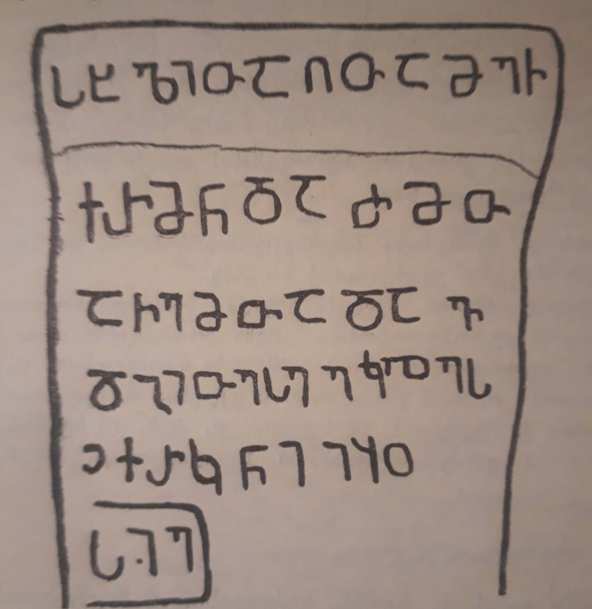

ფიის წმ. თეოდორეს ეკლესიის ჩქარის წარწერაThe inscription of Chqari from St Theodore church of village Phia
ფიის წმ. თეოდორეს ეკლესიის ჩქარის წარწერა
The inscription of Chqari from St Theodore church of village Phia
შინაარსი / Summary
საამშენებლო Building
ბიბლიოგრაფია Bibliography
კრიტიკული გამოცემა Interpretive Edition
ს(ა)ხ(ე)ლითა ღ(მრთისაჲ)თა მე ჩ -
ქ(ა)რმ(ა)ნ და ძმ(ა)თ -
ა ჩემთა დავ -
დგით ესე ეკლეს(ია)ჲ ქრ(ონი)კ(ო) იყო
სიე
დიპლომატიური გამოცემა Diplomatic Edition
ႱႾႪႨႧႠ ႶႧႠ ႫႤ Ⴙ
ႵႰႫႬ ႣႠ ႻႫႧ
Ⴀ ႹႤႫႧႠ ႣႠႥ
ႣႢႨႧ ႤႱႤ ႤႩႪႤႱჂ ႵႰႩ ႨႷႭ
ႱႨႤ

ფიის წმ. თეოდორეს ეკლესიის ჩქარის წარწერა
{'default': 'ღვთის სახელით მე, ჩქარმა, და ჩემმა ძმებმა დავდგით ეს ეკლესია, ქრონიკონი იყო 215. I, Chqari and my brothers placed this church, it was 215 according to Choronikon.'}
{'default': 'ნოდარ შოშიაშვილის ქართული წარწერების კორპუსი მიხედვით, #150.\n საამშენებლო წარწერა უნდა ეკუთვნოდეს ქტიტორს ან ხუროთმოძღვარს. უფრო მისაღები ვარაუდი მეორე ჩანს.\n ვალერი სილოგავას აზრით, საინტერესოა, რომ წარწერაში ეკლესიის აშენების ფაქტი გადმოცემულია სიტყვით „დავდგი“\n და არა „აღვაშენე“, როგორც ეს სხვა შემთხვევებშია (შეიძლება ეს გამოწვეულია იმით, რომ წარწერა ამოკვეთილია ტრაპეზის ქვაზე, რომელიც „დაიდგმებოდა“ და არა „აღეშენებოდა“).\n წარწერა მნიშვნელოვანია პალეოგრაფიულადაც, ის თარიღიანია, ამდენად, თავისთავად დასაყრდენი წერილობითი ძეგლი უთარიღო წარწერების დათარიღებისათვის და,\n მეორეც, მასში „ლასი“ გადმოცემულია ასომთავრული („სახელითა“ - 1 სტრქ.) და ნუსხური („ეკლესიაჲ“ - მე-4 სტრქ.) დაწერილობით - ამით\n დოკუმენტურად, თარიღით, დადასტურებულია ასომთავრულში ნუსხური ასოების (პირველ რიგში და ყველაზე ადრე „ლასის“) შერევის ფაქტი, რომელსაც X ს-ში\n დაწყებულად მიიჩნევდნენ. წარწერაში განკვეთილობის ნიშნები და ქარაგმები არ არის გამოყენებული. სიტყვები ერთმანეთს არ არის დაცილებული. According to the Corpus of Georgian Inscriptions by Nodar Shoshiashvili the inscription #150. The building inscription should belong to the ktetor or the chief ktetor of the church. The latter seems more plausible. Valeri Silogava pays attention to the fact that the inscription contains the word “placed” instead of “built” while referring to building the church as it happens in most of the cases (this might be caused by the fact that the inscription is located on the altar-stele stone that was “placed” and not “built”). The paleographic data of the inscription are noticeable, firstly, naming the date is the basis to give the date to the inscription unlike the other inscriptions without any information about the date, then, the letter L is represented with Asomtavruli (in the word “sakhelita” - 1st line) and with Nuskhuri (“eklesiai” - 4th line) - this represents mixing the Asomtavruli alphabet with Nuskhuri (in terms of the letter L earlier than any other letters) which is considered to start from the X century. The inscription does not contain the marks of separation or abbreviation. No spaces between the words.'}
<div type="edition" xml:lang="ka" ana="mtavruli" xml:space="preserve">
<ab>
<lb n="1"/><w lemma="ქრისტე"><expan><abbr>ქ</abbr><ex>რისტ</ex><abbr>ე</abbr></expan></w>
<w lemma="განსუენება"><expan><abbr>გა</abbr><ex>ნ</ex><abbr>ო</abbr><ex>ჳ</ex><abbr>ს</abbr><ex>უ</ex><abbr>ენე</abbr></expan></w>
<w lemma="სულ">სოჳ<lb n="2" break="no"/>ლსა</w>
<name nymRef="ვაჩა">ვაჩაჲს<lb n="3" break="no"/>ასა</name>
<name nymRef="გურა"><expan><abbr>გო</abbr><ex>ჳ</ex><abbr>რაჲ<lb n="4" break="no"/>სასა</abbr></expan></name>
<name nymRef="მირა"><expan><abbr>მ</abbr><ex>ი</ex><abbr>რა</abbr><ex>ჲ</ex><abbr>ს</abbr><ex>ა</ex><abbr>ს</abbr><ex>ა</ex></expan></name>
</ab>
</div>